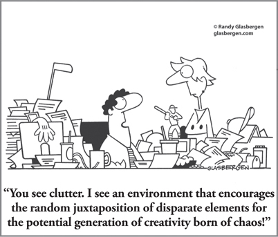

CHAPTER 23
Want Enterprise-wide Innovation? Make Creativity a Core Competency for Every Job Across the Business

CHAPTER HIGHLIGHTS
 Complex new problems and business realities require more creative solutions, which in turn require leaders who are committed to supporting the development of competencies in creative thinking across the organization.
Complex new problems and business realities require more creative solutions, which in turn require leaders who are committed to supporting the development of competencies in creative thinking across the organization.
 The creativity that we all have experienced in our youth can be reclaimed by adults in a business context, but it has to be nurtured.
The creativity that we all have experienced in our youth can be reclaimed by adults in a business context, but it has to be nurtured.
 Jobs are often typecast as “creative” or “noncreative,” when the reality is that all roles can benefit from some level of creative thinking.
Jobs are often typecast as “creative” or “noncreative,” when the reality is that all roles can benefit from some level of creative thinking.
 Specific strategies are required to affirm creative thinking, build a climate in which creativity will flourish, and develop creativity as a legitimate core competency required for everyday work.
Specific strategies are required to affirm creative thinking, build a climate in which creativity will flourish, and develop creativity as a legitimate core competency required for everyday work.
How does an improvisation class or a cooking competition help someone handle complex project delivery in a global environment?” This was a question that the facilitators at the global hotel company IHG had to be prepared to answer as they began training and development around the new “IHG Way” of managing projects.1
Although IHG had a team of experienced project managers in place, the group was struggling to deliver projects in the IHG environment. Their work was complex, but even more problematic was the clash of thinking that was making it difficult to carry projects through to completion. Project management typically relies on rigorous, incremental thinking, with processes and tools designed to match, but the project managers at IHG were dealing with a service-oriented culture filled with people who preferred to get things done through collaboration, relationship building, and free-form communication. It’s a culture that aligns well with the organization’s stated goal of creating “Great Hotels Guests Love,” but it was presenting a challenge for the project managers, who were used to the more A/B, analytical, and structured work processes that are the hallmark of traditional project management systems.
As Crystal Snoddy, IHG’s head of global delivery excellence, put it, “The project managers were trying to succeed in a creative environment, and they didn’t have the tools to do it.”
So the company set out to change that. Among the many tools and methods that IHG has since provided to its project management teams are Whole Brain Thinking and the Whole Brain Model, which are embedded throughout the company’s project management approach. In fact, the first thing that stands out when you open IHG’s project management toolkit is that it looks nothing like any conventional project management process you’ll find. Its striking design, method cards, discovery cards, and color-coded materials filled with infographic-style visuals communicate the same information, but in a dramatically different way.
Beyond the immediate visual difference, the tools themselves are different, designed to appeal to all four thinking preferences and to help people who may not be naturally inclined toward creative thinking to get more comfortable with exploring, idea generation, and seeing problems in new ways.
These tools help build confidence, but it’s the training that accompanies the process that really pushes people outside their comfort zones. To set the stage for shifting their thinking, the very first activity that participants are asked to do is to draw a picture. Later come the improv workshop and the “Iron Chef” competition. Although the initial reaction usually ranges from a reluctance to try—and potentially fail—to outright resistance, the facilitators encourage people to “just go with it,” and a funny thing happens: participants begin to realize not only that they can do it, but that this journey outside their comfort zones is helping them be more successful and productive in their project work. As one team member said, “Before coming to this team, I was never a visual thinker, and now I draw everything!”
As children, we are all naturally creative, but we begin to lose that spark as we gain self-discipline, learn language, accept our parents’ discipline, and obey society’s rules. A global study conducted by Adobe in 20122 revealed that a whopping 75 percent of people think that they’re not living up to their creative potential. Our data on more than 1.5 million adults in our current HBDI database indicate that only 42 percent think of themselves as being creative. This leaves 58 percent who apparently do not think of themselves as being creative.
I believe the same would also be true of the general business population. What happens to the more than half of our business employees who don’t think that they’re creative? What happens to the other almost half who think that they are creative, but probably not nearly as creative as they could be? What happens to those who think that they are creative, but not at work? If they were creative as children, the chances are good that they can reclaim much of what they lost during the maturing process. It’s a little bit like riding a bike. Once you experience success, you can reclaim that success even after 20 or 30 years. All you need is permission, encouragement, and the right circumstances.
A prime reason that many people have temporarily lost their creativity is that they didn’t feel that they had permission to be creative. Well-intentioned parents, teachers, and bosses behaved in ways that partially or even totally shut down these people’s natural creativity as children, adolescents, and their employees. I resisted my own natural creativity for half my life—at least any public demonstration of it. The parental values that were handed down to me were along the lines of, “Do it right the first time.” At least, that is how I interpreted what my family was saying to me, so it was easy for me to have a fear of failure. If there was any risk of failure, I tried things out in private. It was only when I was faced with a midlife medical crisis that I was able to see how silly and self-defeating this behavior was. I had provided myself with an excuse for failing in public, but that never really happened. In the domain of art, I discovered that the public rewarded trying to be an artist to a far greater degree than it punished poor execution of the finished art. I found that the rewards outweighed the risks to such an extent that my activity level soon gave me the practice that I needed to overcome the skill deficits of a beginner.
It’s critical to recognize that getting creative doesn’t need to be so difficult that you waste half your life wondering whether you are good enough to even start. I am confident that most adults can reclaim their creativity because I did so myself, and I have witnessed thousands of others who were in the process of doing so. Lost creativity can be reclaimed, particularly among business employees who function in an organization with leaders who are motivated to take action. And to stay ahead of change, I believe that this is not just a personal imperative, but a business one as well. Enterprise-wide innovation can happen only when creativity is nurtured and developed at the individual level so that it can be developed as a core competency that is valued in the enterprise.
In order to understand how this may be accomplished on a large scale, let’s look at what it takes to make this possible:
1. Attitude. A significant aspect of adult creativity is that more than half of adults don’t think they have it. Yet 75 percent think that they are not living up to their potential, so somehow we must convince them that they were naturally creative as children and that they can regain enough of that early creativity to be usefully creative as adults. I use the strategy of personal affirmation as the primary method of accomplishing this. Since people tend to equate drawing with their early creativity, and since most of them lost what they thought were their natural drawing skills at about age 10, when they acquired a significant language capability, one successful approach I have used is to affirm them by demonstrating that they can draw again. When we teach people the basics of how to draw, we find that a very high percentage of them (80 to 90 percent) actually can. They are then confronted with indisputable evidence of a regained capability. Included in this group are some adults who claimed that they could never draw even as children. Nevertheless, relatively simple techniques can be used to provide a stunning affirmation. As the IHG example shows, this helps people get over a major mental hurdle that they may have about whether they are creative or not.
A second potential area of affirmation is in the ability to visualize in your mind. Again, this is a natural mode of childhood. Just recall how you, as a child, once played with toy soldiers, baby dolls, forts, dollhouses, kitchen sets, construction models, or empty cardboard boxes. We got lost in these fantasies and were able, through our natural ability to visualize, to make real castles out of simple blocks, forts out of blankets, or operating rooms out of plastic toys. This is another domain where affirmation is readily available. Individuals who claim that they can no longer do this discover that they can, and the success level with typical business groups is again over 80 percent and may be as high as 90 percent. When confronted with indisputable evidence of success, participants are hard-pressed to deny this capability. They can then build on it to develop other ways of being creative.
2. Technique. There are specific techniques for achieving these affirmations. Dr. Betty Edwards (who I collaborated with 30 years ago), the author of Drawing on the Right Side of the Brain3 and The Artist Within,4 describes in detail the precise steps in the “learning how to draw” process. There are hundreds of experts throughout the world who can facilitate Betty’s techniques. Dan Pink, author of A Whole New Mind,5 described how this approach affected him:
A few years ago, I took a five-day drawing class in New York City— Betty Edwards’ “Drawing on the Right Side of the Brain”—that changed my life. I entered the class a complete ignoramus on matters visual. By week’s end, I was somewhat less of an ignoramus because, to my amazement, I had begun learning how to see. These insights don’t require a week-long class, of course; others look to something as non-threatening as doodling to get started.
Many adults claim that they used to be able to write rather creatively, but can no longer do so. Books such as Gabriele L. Rico’s Writing the Natural Way6 and Ann Lamott’s Bird by Bird,7 along with a plethora of websites and writing groups, provide specific techniques for opening up people to their natural latent creative writing ability. That’s a specific path toward affirmation. There is nothing quite as persuasive as being impressed by your own creative “stuff,” whether it is prose or poetry.
Another technique for providing affirmation of creative expression is that of “modeling” a problem situation. You can build creative models out of such materials as paper towel rolls, wood blocks, Styrofoam packing, old washing machine parts, dowels, used tennis balls, shoe boxes, feathers, and string, using these creative materials to assemble a three-dimensional metaphorical model of a problem or a situation. Through this hands-on experience of creating something visual, natural imaginative ideas surface and are applied to the evolving model. Insights about the situation emerge as you access thinking that you would not normally process if you were just talking about the issue. The resulting models represent such strong physical evidence of people’s ability to think creatively (when they didn’t think they could) that participants will describe the models to their coworkers and family with great pride and often actually take them home to show them off. Even though this is not about “art,” there is a strong sense of accomplishment when the insights are so powerful.
Participants in one high-level series of workshops on strategic thinking felt that their models of the company and its relationship with key customers were so significant that they incorporated photographs of them into official strategic planning reports.
3. Tools. First on the list of tools is the creative process itself. By providing individuals with a take-away process that they can independently apply, we can give self-described “noncreatives” a golden key that unlocks their own closed door of creativity. In Figure 22-1, in the previous chapter, I identified 82 discrete creative processes that can be selected and applied by people with any mental preference in the four-quadrant model. Through specific training and practice, affirmations lead to individuals becoming creative champions of a particular process that suits their thinking style.
4. Teams and pairs. Many individuals who have lost their creativity have also lost their confidence in their ability to regain it by themselves. While creativity is a very personal process, it also can be very lonely. Pairing up two or more people can be positively reinforcing. Building a team of individuals who are in various stages of creative reclamation can be very mutually supporting and also very exciting. Through team activity, individuals can model stages of the creative process to one another in ways that greatly facilitate creative growth. It’s very hard to resist the momentum of successful creative group involvement. As the IHG example shows, people who are encouraged to “go with it” tend to get caught up in the process, and before they realize it, they have demonstrated their own creativity. It is thrilling when they do, and it’s hard for them to deny that they did it.
5. Climate. In order for any of this to happen, there must be a climate that provides permission, support, and reward for creative behavior. For many people who lost their early creativity, this is a crucially needed reversal of what turned them off in the first place. Many of them didn’t feel that they had permission. They didn’t feel that they had any support, and sometimes they were even punished for their attempts at being creative. This is where business managers must demonstrate their own understanding of creativity by metamorphosing into creative managers. Their goal should be to become creative champions.
If creativity is a specific business goal, then to achieve that goal, the people in charge must understand the opportunity they have to assist their employees in the process of reclaiming the natural creativity of their youth. Managers who do so are also unleashing the creative potential of the organization, and this means that everything will now be different. The more managers become champions of creativity, the more likely it is that the corporate goal of “going creative” can be achieved.
The track record of success is our own more than three decades of business application of this Whole Brain approach to reclaiming creativity in the workplace with organizations around the world.
Creativity Is a Core Competency for Every Job Across the Business
Business leaders can talk creativity all they want, but until there is some permission granting and empowering going on, individuals will be leery of taking a risk. This is especially true for those who are concerned about job security and performing well at creativity. However, most jobs, even those that require repetition, will benefit from unleashing more creative mindsets. You may not consider your job creative, and neither may your boss, but the following is an example of how jobs can be typecast unnecessarily.
During the course of my 35 years with General Electric, I held a number of jobs that were officially “creative” and a number that were not. The tunnel vision of corporate structures lent credence to the idea that only certain jobs in certain departments were creative. For example, I worked for a while in General Electric’s General Engineering Laboratory as a developmental engineer. Although I was a physicist and thought like a physicist, I was called an engineer and needed to think like an engineer. Because this was a developmental engineering laboratory, I needed to think like a developmental engineer, and that meant that I had to invent things. I needed to be creative, although the word creativity was never mentioned. It was not part of GE’s official language back in those days. Meanwhile, other people in the laboratory who were not development engineers were not considered “creative.”
I recall vividly one of the wonders of the laboratory facility. It was a self-service stockroom, filled with every electronic and mechanical gadget, device, or part that you could imagine. It was like an inventor’s flea market. But the only people who had access to this resource were developmental engineers; in other words, only those who were officially “creative” could benefit from this facility, even though there were at least three times as many “noncreative” people supporting the developmental activities.
Well, this seemed odd to me at the time, and viewing it from the perspective of so many years later, such a policy was not only ridiculous, but obscene. In point of fact, every job in the organization was, to a certain degree, creative. Some jobs had creativity implied in the job title, such as developmental engineer, while others who directly supported those positions were called technicians; they did the bidding of the developmental engineers and were thought of as noncreative because of their subordinate position. In retrospect, the hourly-rated toolmakers in the laboratory’s machine shop had to be extremely creative in translating the developmental engineering sketches into experimental hardware. The nonexempt administrative staff, whose members translated the technical dictation of the development engineers and tried to make sense out of the notes on paper napkins drawn in the cafeteria, had to be actively creative in order to survive the nearly impossible role that they played.
Even in my own organization, it would be quite difficult to identify a job that did not have some element of creativity in it. However, in those long-ago times, GE’s culture was like an iceberg: the small part above the water line was visibly creative, while the main body of the iceberg beneath the surface represented the huge, unrecognized, and invisible domain of creativity. It seems odd that so many people could be blind to the obvious in such a smart company. But, as Henry Mintzberg8 reminds us, “People seem to be smart and dull at the same time.” GE is a vastly different company today, but many organizations still have vestiges of this tunnel vision.
If we now pull back from this microscopic view and look at business and industry through a wide-angle lens, we will find hundreds, thousands, and probably millions of employees whose job title and description are officially deemed “noncreative.” Yet many of these jobs have opportunities for creative functioning. These creative job elements are not visible to management. Creative performance is neither encouraged nor rewarded when it occurs. Incredibly, in fact, creative initiatives are often grounds for punishment.
Some companies ignore the creative capabilities of existing employees and outsource their creative needs to consulting organizations that employ individuals who are “officially” creative. I have some personal expertise here because my creative capability was overlooked for 20 years until I “officialized” myself by becoming a professional artist. In so doing, I took advantage of the fact that management wouldn’t understand the difference between artistic creativity and business creativity.
As I write this, I’m thinking about the hundreds of thousands of individuals with enormous creative potential who are assigned to officially noncreative work. Translated into Whole Brain Thinking terms, this means that a lot of very imaginative C- and D-quadrant-oriented people are assigned to A- and B-quadrant work that feels relatively tedious to them. Most of them have demonstrated that they can do the work, but as in the iceberg example, most of their capability and motivation lie below the water line. In many cases, it’s painful for these people to go to work in the morning because only a small portion of their job assignment represents the kinds of activities that stimulate them (see Figure 23-1). Most of their job is made up of work that they actively dislike, but, largely for economic reasons, they are sufficiently motivated to perform that work at an acceptable level … that is, until another opportunity comes along that allows them—and their company—to fully leverage their strengths and talents.
FIGURE 23-1 Pro-forma comparison profiles of assigned work and imaginative individuals.
Let us turn now to people who are not so imaginatively driven, but who have been assigned to work that has a high creative content. This is another form of misery, but not as long-lasting, since their obvious lack of performance reveals the mismatch early in the job cycle (that is, of course, if supervisors and managers are able to see what is happening). I can’t visualize too many things that would be more painful than to be expected to produce creative results on schedule if using your imagination is not your idea of fun. However, I am reminded that for some people, having to squelch your imagination is equally painful. In both cases, this is a lose-lose-lose situation: it’s lose for the employee, it’s lose for the manager, and it’s lose for the company. Once the notion of Whole Brain Creativity is understood, organizations can find ways to have everyone contribute to the creative process, but to do so in ways that are congruent with their preferred approaches.
Creative Courage
Many people do creative things without giving a second thought to the courage it takes to deal with the consequences. But particularly in business, it’s more common for people to be afraid to try because they’re afraid to fail and suffer the very real consequences that are either an explicit or an implicit part of the organizational culture.
Assume for a moment that you have developed a highly creative solution to a longstanding problem in your company. However, some influential people feel that your solution is laughable, impractical, and, in fact, weird. It’s totally off the wall, and you are ridiculed for even suggesting such an outlandish approach to a serious problem. The idea is rejected out of hand.
Or maybe you’ve come up with what you know is a groundbreaking innovation that could catapult your company ahead of the competition. Yet the powers that be don’t have the stomach for any potential failure. If you can’t guarantee them a 100 percent success rate, they don’t even want to consider it. Conversation over.
This is where courage is required. It takes a lot of guts to stand up for your creative idea in the face of severe criticism from the security-minded, safekeeping traditionalists. There is never a lack of naysayers ready to throw cold water on any ideas that deviate from the norm. A whole language has been developed to kill creative ideas (see Figure 23-2). It is likely that all of us have heard these kinds of idea killers, and maybe inadvertently used them ourselves.
FIGURE 23-2 Attitudes that kill creative ideas.
The high-ranking VP-level idea killers I have personally experienced seemed to wear the scalps of dead creative proposals with great pride. On one occasion, I was presenting a creative proposal to a senior vice president heading up a roomful of managers whose approval was required, when he asked the following question at the end of my presentation: “Ned, is what you are recommending something that our leading competitors are doing?” Even though that was totally beside the point, I had to answer, “No.” He responded, “Well, that does it for me,” and he stood up and left the room. Without a word, everybody else stood up and also left the room.
I was blindsided. I was taken by surprise and was unable to spontaneously counter his idea-killing comment. That incident could have terminated several weeks’ worth of creative effort that my task force had put in, but I was so convinced of the soundness of the proposed solution that I made a conscious decision not to cave in, even though this guy was a powerful senior vice president. With the help of the task force members, I prepared and sent to him a written restatement of the proposed creative solution, and ended it by saying, “As you well know, this is an industry-wide problem, and if our competitors got wind of what we propose to do, they would immediately steal our solution and get ahead of us with our key customers.” To my surprise, I got a note back from the senior vice president that said, “I have reconsidered your recommendation, and I think you are right. Thanks for not giving up. I have told the Review Board that I am approving your recommendation.” Now, you can argue that he didn’t have the right to take unilateral action, but I elected not to use a killer phrase to stop him.
There will be times like this when you can challenge killer phrases by having the courage of your own convictions. People who use these idea-killing phrases enjoy a great deal of success. The phrases are so effective that they provide power to people who seek power. I have discovered that in most instances, there is no substance to these killer phrases. People who use them expect to be challenged, and when they are not, their suspicions appear to be correct, and they quickly claim victory. As a result of my own successful experience, I prepared myself not to be blindsided again, particularly by high-level officers whose primary weapon was their rank. I now came ready to deal with any idea-killing phrases that might be made.
The net result was a sharp increase in my creative-proposal batting average. If courage is involved, it comes from the worthiness of the creative recommendation, and it is supported by the success of applying this strategy of positive confrontation.
Finally, but in many ways most importantly, it’s much easier to be courageous—and to get the benefits of creative courage—when you have committed leadership and a strong culture that support doing so. As leaders, we need to not only give permission for creativity, but also make it acceptable for people to fail. Promoting a culture of experimentation by creating safety around trying things out is the only way we can truly achieve enterprise-wide innovation. Think about it: most of us are dealing with entirely new challenges, completely unprecedented issues, and a future that’s pretty much impossible to predict with any sort of accuracy. A “fail fast, fail cheap” approach helps make it acceptable for people to pilot ideas and test things out. Take a page from the world of IT development and build in prototyping and regular checkpoints to allow for future-proofing products and ideas along the way. Make sure you allow people to have small wins. Creativity researcher Teresa Amabile’s Progress Principles have shown that you can increase and affirm creativity by celebrating the small milestones.10 And as a 3M slogan so aptly states, never kill an idea, just deflect it.
SO WHAT?
 Many people who have creative potential are unaware of it and therefore lack the confidence and willingness to try to apply it.
Many people who have creative potential are unaware of it and therefore lack the confidence and willingness to try to apply it.
 Even those jobs that are labeled noncreative require and benefit from some level of creative thinking.
Even those jobs that are labeled noncreative require and benefit from some level of creative thinking.
 A high percentage of the ideas that are developed in an organizational setting are wasted. Leaders who want to encourage creativity need to be aware of this and actively campaign to change the culture from killing creativity to stimulating it, supporting it, and rewarding it.
A high percentage of the ideas that are developed in an organizational setting are wasted. Leaders who want to encourage creativity need to be aware of this and actively campaign to change the culture from killing creativity to stimulating it, supporting it, and rewarding it.
 Key components of the successful application of corporate creativity programs are top management’s recognition of the need for creativity to keep the organization competitive, an understanding of the creative process and its consequences, and the presence of one or more courageous and knowledgeable creativity champions to provide inspirational leadership and protective air cover.
Key components of the successful application of corporate creativity programs are top management’s recognition of the need for creativity to keep the organization competitive, an understanding of the creative process and its consequences, and the presence of one or more courageous and knowledgeable creativity champions to provide inspirational leadership and protective air cover.
 Moving from “but” to “and how might we” to avoid killing ideas will open people up to sharing more of their creative thinking.
Moving from “but” to “and how might we” to avoid killing ideas will open people up to sharing more of their creative thinking.